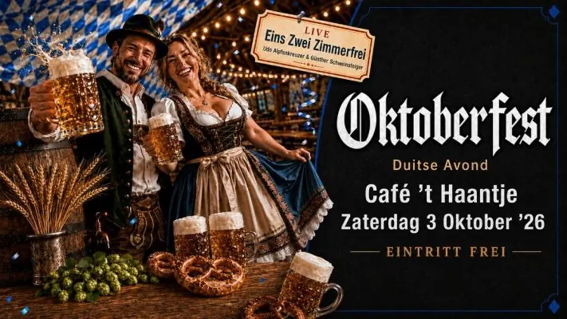
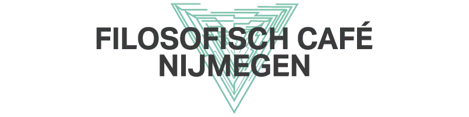
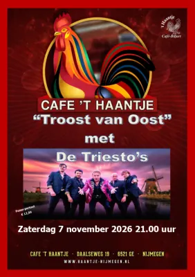
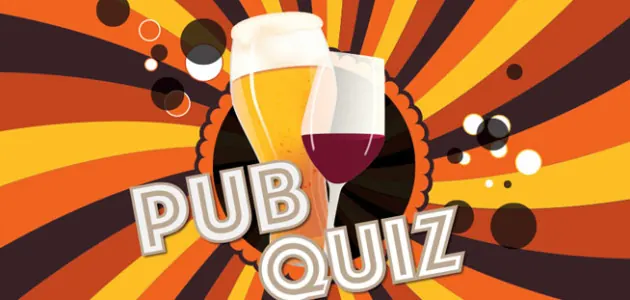
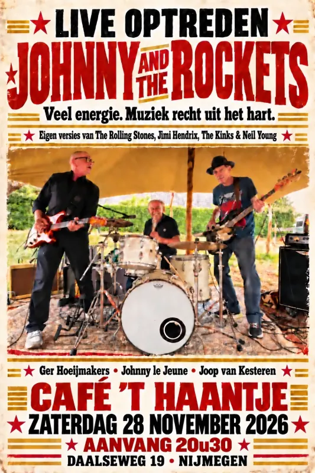

Dit evenement is afgelopen. Bekijk wat er binnenkort te doen is.
Uitgelicht evenement
OKTOBERFEST bij Café ’t Haantje
- Wanneerzaterdag 3 oktober 2026, 21.00 tot 23.55 uur
- WaarCafe 't Haantje
Daalseweg 19 Route - Bekijk op de website van Cafe 't Haantje

Oktoberfest 2026 – Deutsche Abend 🍻🇩🇪
Zaterdag 3 oktober 2026 | Aanvang 21.00 uur
Trek je lederhose uit de kast, hijs jezelf in je mooiste dirndl en maak je klaar voor een avond vol Duitse gezelligheid! Op zaterdag 3 oktober staat alles in het teken van Oktoberfest 2026 – Deutsche Abend.
Verwacht een feestelijke avond met Duitse Schlagers, meezingers, gezelligheid en natuurlijk een flinke dosis Oktoberfest-sfeer. Stil blijven staan wordt lastig, want tijdens deze Schlager Abend mag er volop gezongen, gedanst en gefeest worden.
En er staat nóg iets bijzonders op het programma: Eins Zwei Zimmer Frei! zorgt deze avond voor een leuke verrassing. Wat precies? Dat houden we natuurlijk nog even geheim… 😉
Dus verzamel je vrienden, oefen alvast je beste Duitse meezingers en kom op zaterdag 3 oktober naar het Oktoberfest.
Ein Prosit, ein Prosit der Gemütlichkeit! 🍺🎶
📅 Zaterdag 3 oktober 2026
🕘 Aanvang: 21.00 uur
🎶 Deutsche Abend & Schlager Abend
🎉 Met een leuke verrassing van Eins Zwei Zimmer Frei!
Meer evenementen bij Cafe 't Haantje

UitgelichtFilosofisch Cafe bij Café ’t Haantje2 nov, 20.00 uurCafe 't Haantje 7nov
UitgelichtTroost van Oost 2026 met De Triesto’s7 nov, 21.00 uurCafe 't Haantje 14nov
UitgelichtPubquiz bij café ’t Haantje14 nov, 20.30 uurCafe 't Haantje 28nov
UitgelichtJohnny and the Rockets28 nov, 20.30 uurCafe 't HaantjeBinnenkort in Nijmegen
 UitgelichtSean Taylor24 okt, 20.00 uurDe Brauerij
25okt
UitgelichtSean Taylor24 okt, 20.00 uurDe Brauerij
25okt UitgelichtHighlight Tours in het Vrijheidsmuseum25 okt, 14.00 uurVrijheidsmuseum
25okt
UitgelichtHighlight Tours in het Vrijheidsmuseum25 okt, 14.00 uurVrijheidsmuseum
25okt Uitwisselingsconcert Harmonie Hatert met DOV Wijchen25 okt, 13.00 uur
27okt
Uitwisselingsconcert Harmonie Hatert met DOV Wijchen25 okt, 13.00 uur
27okt Filmvertoning: Het land van mijn ouders27 okt, 19.00 uurHuis van de Nijmeegse Geschiedenis
Filmvertoning: Het land van mijn ouders27 okt, 19.00 uurHuis van de Nijmeegse Geschiedenis